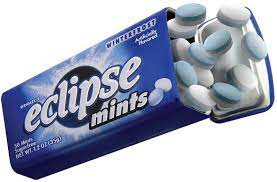
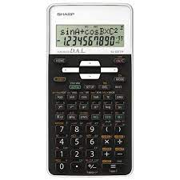
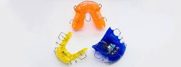

Test Image - 
Output on Google lens -
wrigleys eclipse chewy mints
Output on Mobilenet Model -
bottle cap
Result -
google lens Is 100% accurate while Mobilenet gave a random statement saying it was a bottle cap
Test Image - 
Ouput on google lens -
genuine sharp EL-531XHB-WB scientific calculator
Output on MobileNet Model -
cell phone
Result -
google lens was 50% more accurate then the Mobilenet
Test Image - 
Output on google lens -
Mango body mist
Output on MobileNet Model -
lipstick
Result -
google lens was way more accurate
Test Image -
Output on google lens -
Trollmal cushion cover
Output on Mobilenet Model -
handkerchief
Result -
google lens Is More Accurate
Test Image - 
Output on google lens -
Dailiphs
Output on Mobilenet Model -
Toaster
Result -
none of them were correct